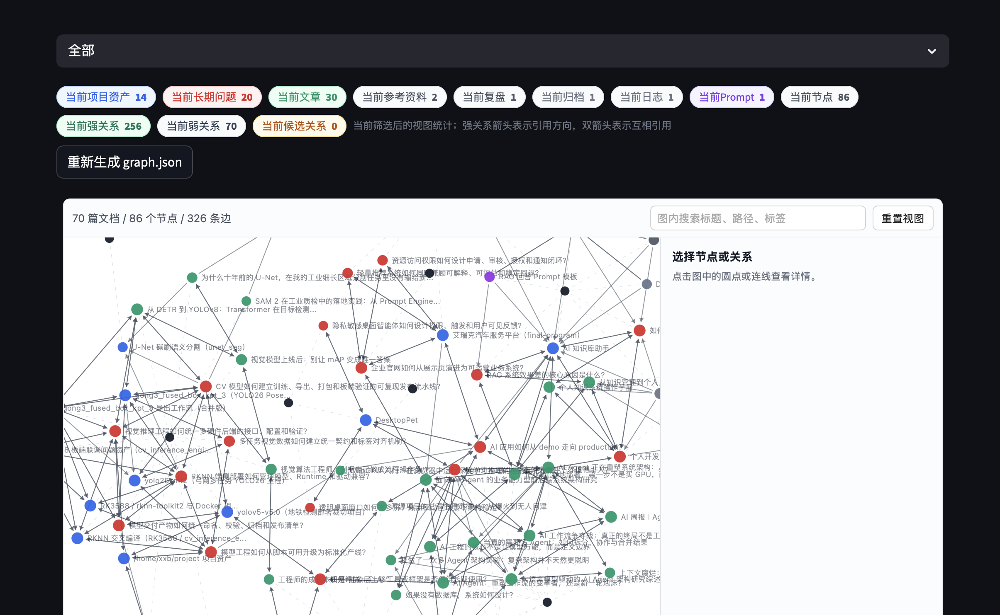

Work / Local AI · RAG · Knowledge Graph
Local Knowledge Assistant
A local-first RAG system for long-term personal knowledge assets, combining Markdown, retrieval, answer generation, Notion synchronization, and knowledge graph governance in one maintainable workspace.
- Independent Developer
- Active Development
- Python / FastAPI / Vue 3
- No. 08

Turn a Personal Knowledge Base into a Governed System
The project uses local Markdown as its source of truth and builds a complete workflow for long-term personal knowledge assets. Content ingestion, metadata standardization, vector indexing, retrieval reranking, answer generation, relationship maintenance, and graph exploration all live in the same workspace.
Indexing and retrieval run locally by default. Answer generation can use DeepSeek with a local Ollama fallback when the API is unavailable. For sensitive questions, remote generation can be disabled to keep the entire flow on device.

From Local Documents to Traceable Answers
The retrieval pipeline separates responsibilities to keep installation stable on Apple Silicon while preserving clear extension points for future index and model changes.
Knowledge Governance Beyond Retrieval
Document type, status, scope, summary, tags, Wiki tags, and strong relationships are normalized into front matter. Content ingestion and relationship edits always produce a preview before writing, preventing automation from silently changing the source knowledge base.
Multiple Workspaces share the same capabilities while keeping data isolated. Incremental index rebuilds reuse vectors for unchanged chunks and only encode new or modified content.
Controlled Synchronization Between Local Files and Notion
The project supports Notion import and synchronization with live progress, retry logs, and explicit failure reasons. Checkpoints make interrupted jobs resumable, content hashes skip unchanged entries, and bidirectional project-to-problem relationships are synchronized as database properties.
Every write operation follows a preview, confirm, execute boundary. API credentials remain in local environment files and are never committed to the repository.
Explore Disconnected Documents as a Relationship Network
The graph distinguishes manually confirmed strong relationships, weak relationships derived from scope and Wiki tags, and candidate links awaiting review. Users can filter by document type, directory, scope, tag, or keyword and focus on the one-hop neighborhood of any node.